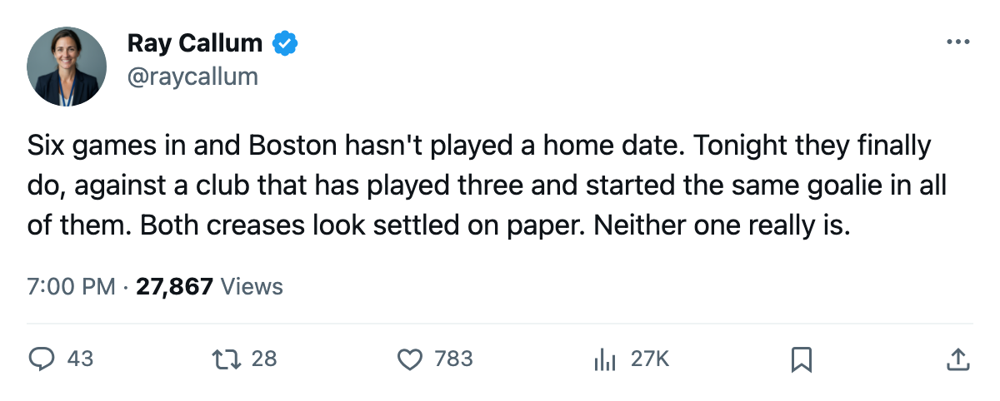
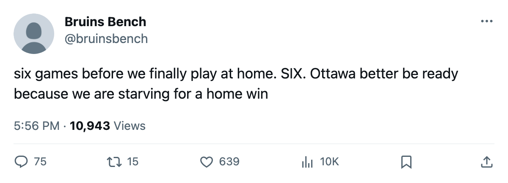

First Home Game: Boston Opens at Home Tonight After 6 Straight on the Road, and Ottawa Brings a Goalie Question
A 4-1-1 start earned entirely away from the building, and Ray Emery has started all 3 Ottawa games without the competition closing
 Ray CallumSenior correspondent · Home Ice Network
Ray CallumSenior correspondent · Home Ice Network
 Boston Bruins has played 6 games, won 4, and never worn a home sweater. Tonight
Boston Bruins has played 6 games, won 4, and never worn a home sweater. Tonight  Ottawa Senators visits the Garden for the Bruins' first home date. The 3-game winning streak they carry into it was built entirely on the road.
Ottawa Senators visits the Garden for the Bruins' first home date. The 3-game winning streak they carry into it was built entirely on the road.
Boston Bruins sits 4th in the Northeast Division on 9 points, 3 behind  Toronto Maple Leafs. They have scored 20 goals and allowed 15.
Toronto Maple Leafs. They have scored 20 goals and allowed 15.  Andrew Raycroft85 has made 5 of the 6 starts, and
Andrew Raycroft85 has made 5 of the 6 starts, and  Steve Shields84 has the other. The workload will likely stay with Raycroft through the homestand that begins tonight.
Steve Shields84 has the other. The workload will likely stay with Raycroft through the homestand that begins tonight.
Ottawa Senators has played 3 games, the fewest of any club in the division, and sits last with 2 points. They have scored 5 and allowed 8. Ray Emery82 started all 3.  Patrick Lalime88 appeared in 1 and has not started this season. The Senators opened the year 0-2 amid a goaltending shuffle. Emery has started every game since and holds the crease, but Lalime remains on the roster and the competition has not closed.
Patrick Lalime88 appeared in 1 and has not started this season. The Senators opened the year 0-2 amid a goaltending shuffle. Emery has started every game since and holds the crease, but Lalime remains on the roster and the competition has not closed.
Boston Bruins is missing  Sergei Samsonov87, out with a neck injury until November 9. Ottawa Senators has no one on the current injured list. This is the first meeting of the season between the two clubs.
Sergei Samsonov87, out with a neck injury until November 9. Ottawa Senators has no one on the current injured list. This is the first meeting of the season between the two clubs.
The Bruins play  Atlanta Thrashers on October 26 and
Atlanta Thrashers on October 26 and  Mighty Ducks of Anaheim on October 31, opening a 3-game homestand after 6 consecutive road dates.
Mighty Ducks of Anaheim on October 31, opening a 3-game homestand after 6 consecutive road dates.

